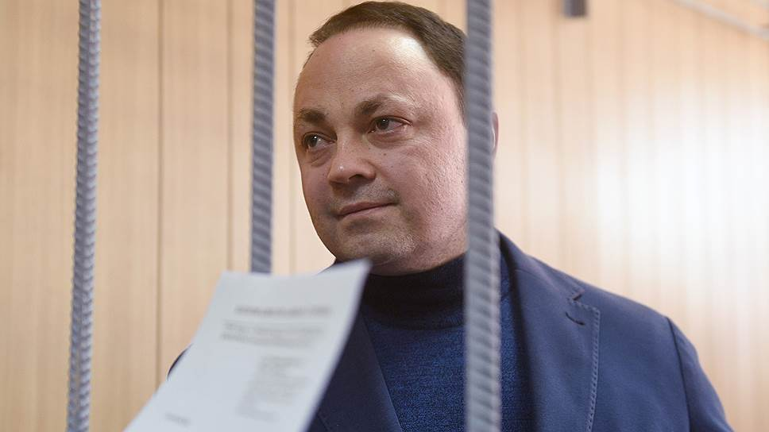
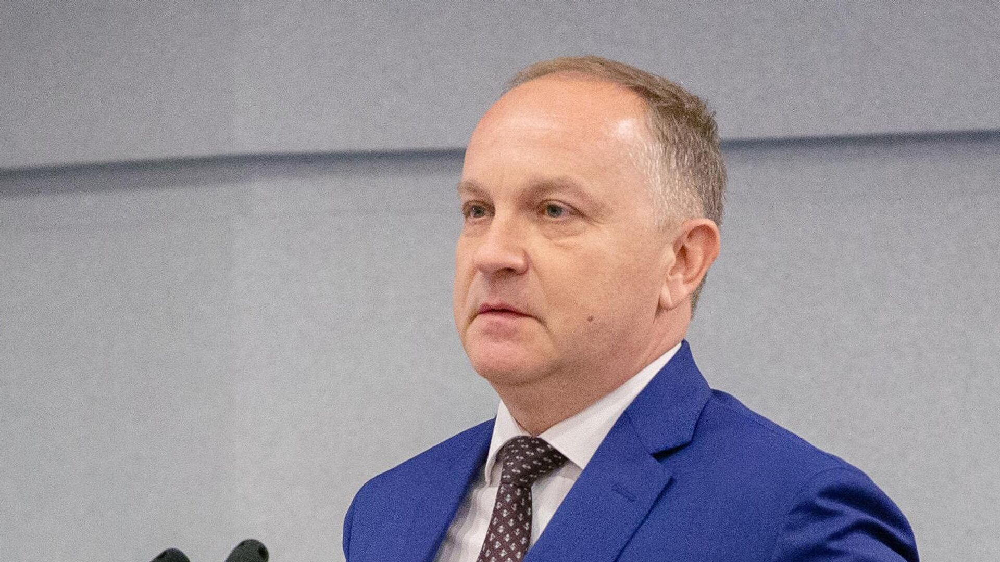
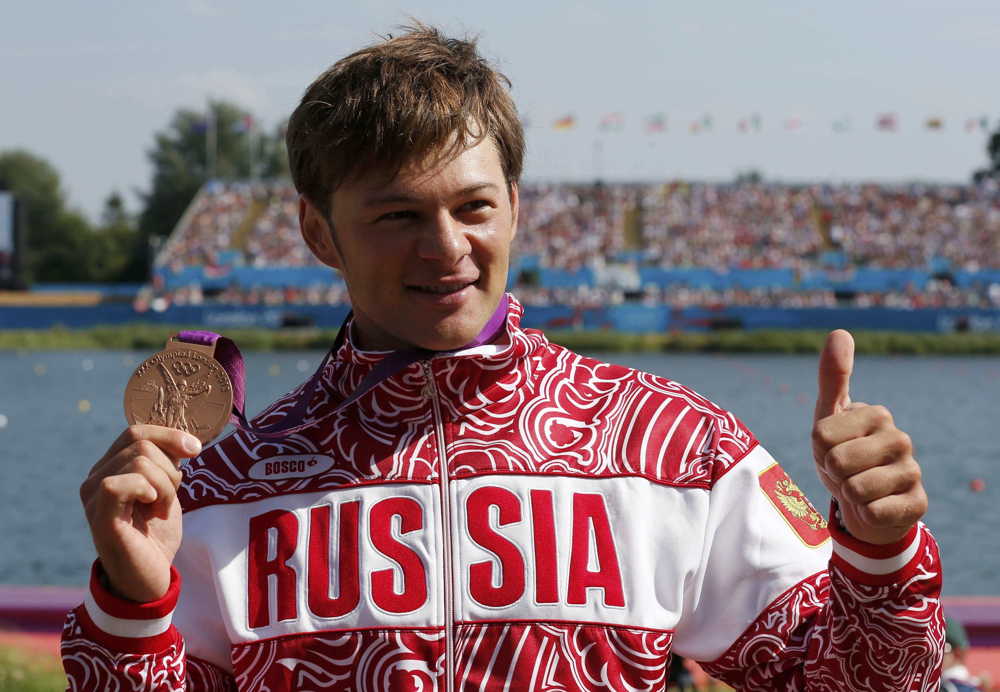

Важные личности
Пушкарёв Игорь Сергеевич
И́горь Серге́евич Пушкарёв (род. 17 ноября 1974, Читинская область, СССР) — российский государственный деятель. Бывший представитель от Законодательного собрания Приморского края в Совете Федерации России, заместитель председателя комиссии по делам молодёжи и спорту, член комитета по бюджету. С 18 мая 2008 года по 3 ноября 2017 года — глава администрации Владивостока.
В 1999 году окончил Владивостокский институт международных отношений ДВГУ по специальности «экономист-международник». В вузе Игорь Пушкарёв изучал два иностранных языка — английский и корейский — и работал переводчиком в корейской компании «Пусан», импортировавшей в Россию продукты, в том числе печенье «Чокопай» и лапшу «Доширак». В 18 лет он стал исполнительным директором предприятия. С 1995 по 1997 год был исполнительным директором в занимавшейся импортом продуктов ООО «Влад-Кан». В 1997 году Игорь Пушкарёв создал и возглавил компанию «Парк Групп».
18 мая 2008 года избран на должность главы администрации Владивостока. В 2013 году переизбран на второй срок с результатом 59,45 %, представлял партию «Единая Россия».
В должности мэра Пушкарёв первые годы посвятил подготовке к АТЭС-2012: реконструкции и расширению дорог, строительству мостов, кампуса ДВФУ. Кроме общего благоустройства и строительства детских садов, администрация Пушкарёва запомнилась реформой городского транспорта. Пушкарёв кардинально изменил схему движения автотранспорта во Владивостоке, внедрив закольцованное одностороннее движение в центре города. При нём сократилось троллейбусное и трамвайное движение, но был обновлён парк автобусов. 5 июня 2014 года награждён медалью общественной организации «Российская муниципальная академия» «За вклад в развитие и становление местного самоуправления».
После избрания мэром Владивостока СМИ и политики приписывали Пушкарёву губернаторские амбиции. По воспоминанием коллег, между Пушкарёвым и губернатором Владимиром Миклушевским (2012—2017) были сложные отношения с самого начала: краевое телевидение критиковало Пушкарёва, а мэр публиковал в подконтрольных СМИ критику в адрес губернатора. Конфликт обострился перед выборами в депутатов заксобрания осенью 2016: внутри «Единой России» команды мэры и губернатора боролись за одни и те же мандаты. Предполагают, что после визита в Москву Миклушевский смог заручиться поддержкой силовиков в конфликте с мэром. 1 июня 2016 года Игорь Пушкарёв был арестован и этапирован в Москву. Сразу после ареста «Единая Россия» приостановила членство Пушкарёва. По решению Басманного районного суда Москвы 9 марта 2017 года был временно отстранён от должности главы администрации Владивостока. 3 ноября 2017 года Игорь Пушкарёв добровольно ушёл в отставку.
9 апреля 2019 года Тверской суд Москвы признал Игоря Пушкарёва виновным в получении взятки в особо крупном размере (ч. 6 ст. 290 УК РФ), злоупотреблении должностными полномочиями (ч. 3 ст. 285 УК РФ) и коммерческом подкупе (п. «а» ч. 2 ст. 204 УК РФ). Его приговорили к 15 годам колонии строгого режима.
Гуменюк Олег Владимирович
Олег Владимирович Гуменюк (род. 3 марта 1967, Владивосток) — российский государственный деятель. Глава города Владивостока с 5 апреля 2019 по 18 мая 2021. Действительный государственный советник Амурской области III класса.
4 октября 2021 года задержан по подозрению в получении взятки, дело ведёт Следственный комитет по Приморскому краю. 12 декабря 2022 года в Ленинском районном суде Владивостока начались прения сторон. Прокуратура запросила для политика 17 лет колонии строгого режима, 150 млн рублей штрафа, а также 12 летний запрет на занятие должностей в органах власти. Бывшего мэра подозревают в получении взяток на сумму около 38 млн рублей, покровительство похоронного бизнеса, и помощь знакомому бизнесмену, который занимался строительством. По версии следствия, градоначальник помогал ему получать выгодные контракты. Ранее Ленинский районный суд Владивостока вынес обвинительное решение местному предпринимателю Сергею Сиротину за посредничество во взяточничестве, и приговорил его к 4 годам лишения свободы и штрафу 62,5 млн рублей. Это двукратная сумма взяток, которые Сергей Сиротин передавал Олегу Гуменюку с декабря 2018 года за покровительство над ритуальным агентством «Некрополь». Сегрей Сиротин признал вину и начал содействовать со следствием. Олега Гуменюка также обвиняют в получении 6,9 млн рублей в период с 2016 года по 2018 год, которые тогда еще глава хозяйственного управления администрации Приморского края получал за обеспечение победы на онлайн аукционах. Свою вину Гуменюк не признал. 18 января 2023 года приговорён судом к 16,5 года лишения свободы и штрафу в 150 миллионов рублей по делу о получении взяток общей суммой свыше 38 миллионов рублей.
Штыль Иван Александрович
Ива́н Алекса́ндрович Штыль (8 июня 1986, Комсомольск-на-Амуре) — российский гребец-каноист, спринтер, выступающий за сборную России с 2005 года. Бронзовый призёр летних Олимпийских игр в Лондоне, семнадцатикратный чемпион мира, девятикратный чемпион Европы, неоднократный призёр чемпионатов мира и Европы, обладатель Кубка мира. Выступает за Приморский край, город Владивосток, заслуженный мастер спорта.
Иван Штыль родился 8 июня 1986 года в городе Комсомольск-на-Амуре, Хабаровский край. Греблей на каноэ стал заниматься уже в возрасте десяти лет, поступив в местную детско-юношескую спортивную школу. Четыре года тренировался под руководством тренера Семёна Георгиевича Бралла, а после победы в каноэ-одиночке на юниорском турнире «Быстрые вёсла» в 1999 году был замечен специалистами из Владивостока и принят в Приморское училище олимпийского резерва, где позже его включили в губернаторскую программу подготовки ведущих спортсменов края к Олимпийским играм. В училище занимался с тренерами Алексеем Капустой и Сергеем Сидоренко, спустя два года успешно выступил на всероссийских соревнованиях в Костроме, получив бронзовую медаль в двойке.
Впервые в состав взрослой сборной России попал в 2005 году, примерно в то же время вместе с российской четвёркой выиграл золото на европейском первенстве в Болгарии, пришёл первым на дистанции 500 м. Через год познакомился с опытным гребцом Евгением Игнатовым и стал выступать с ним в двойке на двухсотметровых дистанциях. Так, уже на чемпионате мира в венгерском Сегеде они взяли в этой дисциплине золотые награды, а год спустя на мировом первенстве в немецком Дуйсбурге защитили звание чемпионов, при этом с четвёркой Штыль выиграл серебро. Не менее богатым на медали для него получился и 2009 год, когда на чемпионате мира в канадском Дартмуте он удостоился звания чемпиона в программе эстафеты 4x200 м, а с двойкой дважды финишировал вторым, сначала на 200 м, потом на 500.
Череда успешных выступлений продолжилась и в следующем сезоне, например, на мировом первенстве 2010 года в польской Познани Штыль дважды стоял на верхней ступени пьедестала, был первым в гонке одиночек на 200 м и в эстафете, кроме того, показал второй результат в состязаниях двоек на 200 м. Спустя год в Сегеде завоевал уже шестую золотую медаль мирового достоинства, придя первым в эстафете, также занял второе место в индивидуальном старте на 200 м. Выбившись в лидеры сборной, Иван Штыль удостоился права защищать честь страны на летних Олимпийских играх 2012 года в Лондоне, участвовал в двухсотметровых гонках на одноместных каноэ, в полуфинале финишировал первым, в финале пересёк финишную черту третьим и получил бронзовую медаль. Занять первое место ему, по собственному признанию, помешал сильный ветер, давший преимущество левосторонним гребцам.